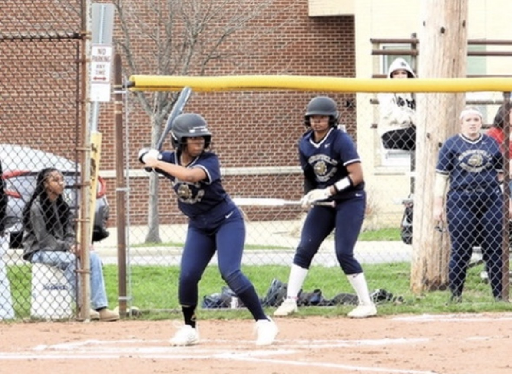
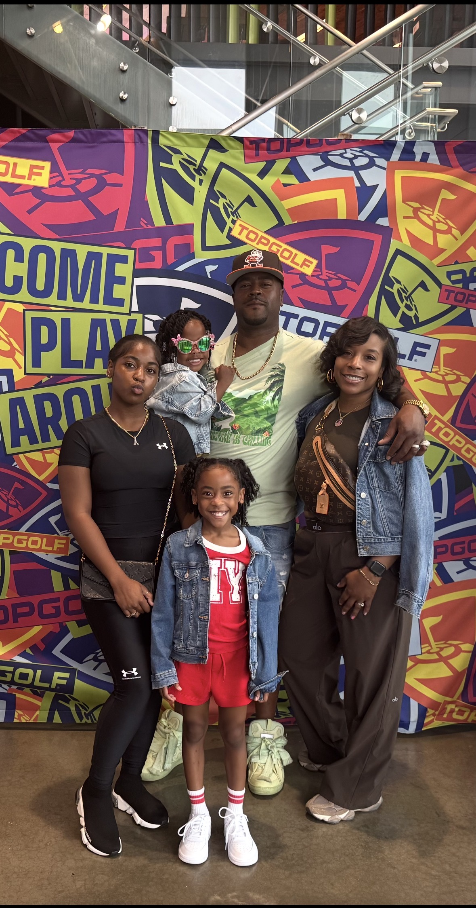

Growing Up
- As I grew up, I watched a lot of TV, like A LOT. Television in my family is kind of how we bond, so to spend time with each other, we watch TV. Most of our English has been replaced with movie quotes. I love watching TV, and I like that it brought my family together. It plays a big role in how I grew up and I wouldn't trade it for anything!
- I also grew up attending/having a lot of sleepovers. You may think that's normal but it was special to me since I did not have any siblings until I was 10 years old. I have a pretty big family on both sides of my family, so I was always with a cousin or a friend. I used to host back to school sleepovers, and big birthday parties. I feel like doing these things so young really helped me learn to cherish family and friendship.
- As you know, up until I was 10 years old, I was an only child. I always wanted to have siblings because everyone I was around my age had siblings and I used to feel a little left out. On June 2nd, 2019, my little sister Bailey was born and I absolutely fell inlove with her. I remember the first time I saw her and it felt like a piece of my heart belonged to her. She is now 7 and gets on my nerves, but I love her to death. Then, on October 11th, 2022, my little sister Brielle was born. I was super excited about Brielle because I love babies but I was also dissapointed because I wanted her to be a boy so bad, I remember I cried so hard when we found out about her gender, but I wouldn't trade her for the world, plus she looks exactly like me! I strive to be a great role model for my siblings because I want them to be successful, as Bailey is amazing at gymnastics and Brielle is starting ballet lessons, I love my siblings to death.
A Little More (Sports)

- Growing up, I also played softball. I started playing when I was just 4 years old, starting with T-ball. I then started playing for the rec center, up until I got to middle school. Middle school softball was way different than rec softball, but I still loved the sport. When I am on the field, I actually feel the feeling of happiness and it makes me feel great! Softball keeps me busy, and I hope to play in college.
- I also played soccer growing up, up until 7th grade. I started playing soccer when I had just freshly turned five. My father signed me up for indoor soccer. I fell in love with it, and eventually started playing outdoor soccer as well. As much as I loved soccer, I had to let it go because I didn't care for the team. I still love soccer, but from a distance. Maybe I will play again one day.
- Last but not least, I also ran track and practiced gymnastics growing up. My cousin is a track coach and she runs a little league, so I used to come and go on the team as I pleased. I ran in a couple meets, and I liked the workouts, but it just wasn't for me. I tried again my freshman year and didn't care for it. I did gymnastics for 5 years as well, but I also didn't care for that. This concludes my little sports history and I hope you enjoyed.
Some Of The People I Love

- MaKenzi
- MaKenzi is my best friend. She is like the big sister I never had. I am extremely thankful for her because she helps me get through life. When I'm sad, I text Kenzi, when I'm happy, I text Kenzi, and so on. I am thankful for my best friend because she is my family.
- My Sisters
- Bailey and Brielle are my baby sisters. I love them so much. They are my built in best friends, my spoiled brats, but I love them oh so dearly. I could not imagine my life without them, and I just want to set a good example for them.
- My Parents
- My parents are my creators, so how could I not love them? My dad and my mom are both my best friends. I am extremely grateful for my parents because they introduced me to a lot of things, and they are always supporting and investing in any and everything that I want to do, and i truly belive I could not go through life without them.
- My Grandparents
- I look at my grandparents as rays of sunshine. They are the most supportive and positive people I know. I have 10 grandparents, and I love them all dearly. Their doors are always open for me and they always give me a shoulder to lean on. I love making my grandparents proud, and they love spoiling me. All of my grandparents hold a very special place in my heart, and my love for them is unconditional!